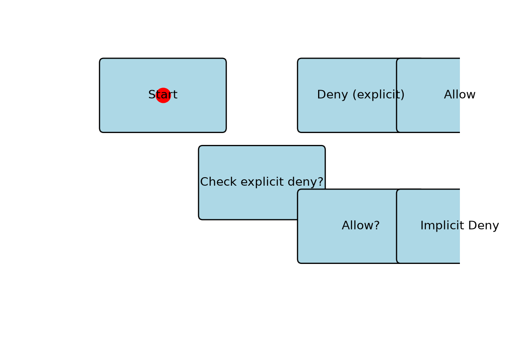

This animation illustrates a learner‑controlled step‑by‑step walkthrough of a flowchart scenario, as specified in the StudyShift agent spec (Feature F3 – Animations).
Key Points to Animate (from F3)
Learner‑controlled playback: The animation does not autoplay; the learner presses Play/Pause, Next/Previous, Restart, and can adjust speed.
Step‑by‑step highlighting with source‑linked captions: Each step highlights specific nodes/edges and shows a caption that cites the source text (anchor).
Motion policy integration: The visualization respects the user's motion setting (full, reduced, off) – in full mode a marker travels along edges and nodes pulse; in reduced/instant modes changes are immediate.
Sample Animation Flowchart Walkthrough

Illustrates a moving highlight progressing through a decision‑based flowchart (Start → Check explicit deny? → Deny / Allow? → Final outcome).